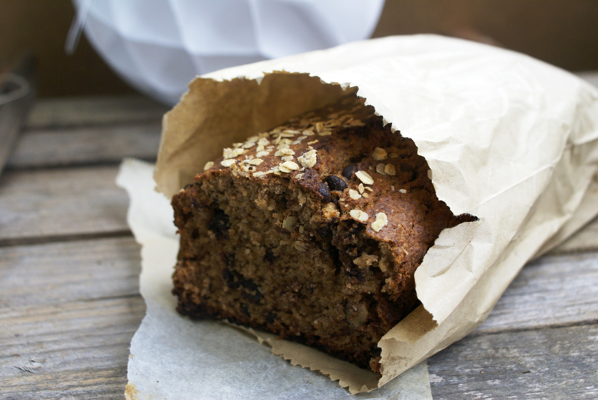

Banana Bread

Description
Banana bread is a type of bread made from mashed bananas. It is often a moist, sweet, cake-like quick bread; however there are some banana bread recipes that are traditional-style raised breads.
Ingredients
- 2 cups all-purpose flour
- 1 teaspoon baking soda
- ¼ teaspoon salt
- ½ cup butter
- ¾ cup brown sugar
- 2 eggs, beaten
- 2⅓ cups mashed overripe bananas
Instructions
- Preheat oven to 350 degrees F (175 degrees C). Lightly grease a 9x5 inch loaf pan.
- In a large bowl, combine flour, baking soda and salt. In a separate bowl, cream together butter and brown sugar. Stir in eggs and mashed bananas until well blended. Stir banana mixture into flour mixture; stir just to moisten. Pour batter into prepared loaf pan.
- Bake in preheated oven for 60 to 65 minutes, until a toothpick inserted into center of the loaf comes out clean. Let bread cool in pan for 10 minutes, then turn out onto a wire rack.